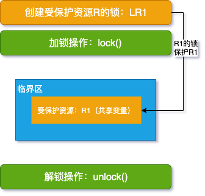
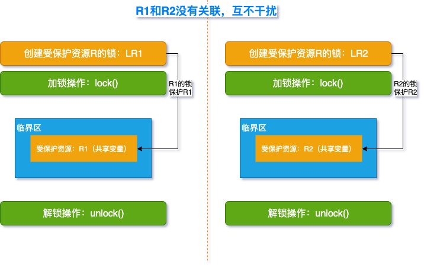
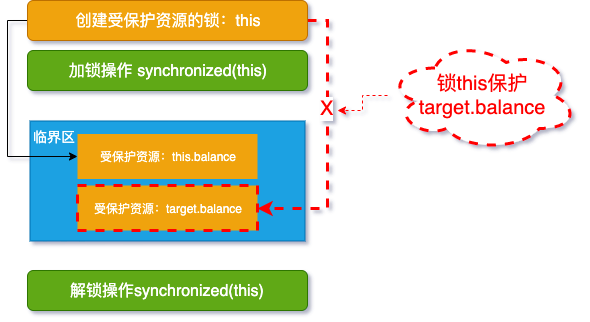
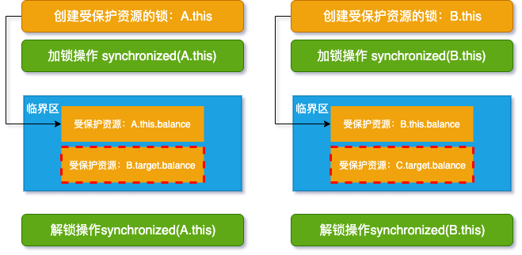
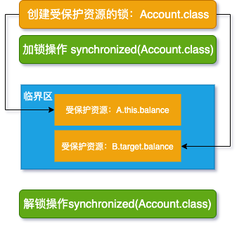

原文连接:https://www.cnblogs.com/FraserYu/p/11683761.html
写在前面
上一篇文章原子性问题的宏观理解 带领大家了解了锁和资源的模型，有了这篇文章的铺垫，相信理解这一篇文章就非常轻松了
当我们要保护单个资源并对其进行修改其实很简单，只需按照下图分三步走
- 创建受保护资源 R 的锁
- 加锁进入临界区
- 解锁走出临界区

上图的关键是「R1 的锁保护 R1」的指向关系是否正确
如果都是保护单个资源这样简单，程序猿的世界该有多美好，可惜并不是，通常我们需要保护多个资源
保护多个资源
保护多个没有关系的资源
如果多个资源没有关系，那就是保护一个资源模型的复制，同样非常简单，且看下图:

比如现实中银行取款和修改密码操作。
银行取款操作对应的资源是「余额」, 修改密码操作对应的资源是「密码」，余额和密码两个资源完全没有关系，所以各自用自家的锁保护自家的资源就好了
如果多个资源没有关系，程序猿的世界该有多美好，可惜并不是，我们保护的资源多数情况都有关联关系
保护多个关系的资源
拿经典的银行转账案例来说明，账户 A 给账户 B 转账，账户 A 余额减少 100 元，账户 B 余额增加 100 元，这个操作要是原子性的，那么资源「A 余额」和资源「B 余额」就这样"有了关系"，先来看程序:
class Account {
private int balance;
// 转账
synchronized void transfer(
Account target, int amt){
if (this.balance > amt) {
this.balance -= amt;
target.balance += amt;
}
}
}用 synchronized 直接保护 transfer 方法，然后操作资源「A 余额」和资源「B 余额」就可以了
⚠️: 真的是这样吗？
先停止向下看，在你的笔记本上按照文章开头的三步走来画个图看一看，是否和下图一样呢？

我们通常容易忽略锁和资源的指向关系，我们想当然的用锁 this 来保护 target 资源了，也就没有起到保护作用
假设 A，B，C 账户初始余额都是 200 原，A 向 B 转账 100，B 向 C 转账 100
我们期盼最终的结果是:
账户 A 余额: 100 元
账户 B 余额: 200 元
账户 C 余额: 300 元
假线程 1「A 向 B 转账」与线程 2「B 向 C 转账」两个操作同时执行，根据 JMM 模型可知，线程 1 和线程 2 读取线程 B 当前的余额都是 200 元:
- 线程 1 执行 transfer 方法锁定的是 A 的实例(A.this)，并没有锁定 B 的实例
- 线程 2 执行 transfer 方法锁定的是 B 的实例(B.this)，并没有锁定 C 的实例
所以线程 1 和线程 2 可以同时进入 transfer 临界区，上面你认为对的模型其实就会变成这个样子:

还记得 happens-before 规则 这篇文章提到的监视器锁规则和传递性规则吗？
监视器锁规则
对一个锁的解锁 happens-before 于随后对这个锁的加锁
传递性规则
如果 A happens-before B, 且 B happens-before C, 那么 A happens-before C
资源 B.balance 存在于两个"临界区"中，所以这个"临界区"对 B.balance 来说形同虚设，也就不满足监视器锁规则，进而导致传递性规则也不生效，说白了，前序线程的更改结果对后一个线程不可见
这样最终导致:
账户 B 的余额可能是 100: 线程 1 写 B.balance 100(balance = 300) 先于 线程 2 写 B.balance(balance = 100)，也就是说线程 1 的结果会被线程 2 覆盖，导致最终账户 B 的余额为 100
账户 B 的余额可能是 300: 与上述情况相反，线程 1 写 B.balance 100(balance = 300) 后于 线程 2 写 B.balance(balance = 100)，也就是说线程 2 的结果线程 1 覆盖，导致最终账户 B 的余额为 300
就是不能得到我们理想结果 200，感觉生活无比的艰难，那怎么办呢？
正确姿势
上面的问题就是为资源创建的锁不能保护所有关联的资源，那我们就想办法解决这个问题，来看下面代码:
class Account {
private int balance;
// 转账
void transfer(Account target, int amt){
synchronized(Account.class) {
if (this.balance > amt) {
this.balance -= amt;
target.balance += amt;
}
}
}
}我们将 this 锁变为 Account.class 锁，Account.class 是虚拟机加载 Account 类时创建的，肯定是唯一的(双亲委派模型解释了为何该对象是唯一的)， 所有 Account 对象都共享 Account.class, 也就是说，Account.class 锁能保护所有 Account 对象，我们将上面程序再用模型解释一下

总结
到这里关于锁和资源的关系你应该了解的更加透彻了，单个资源和多个无关联资源的情形都很好处理，为各自资源创建相应的锁就好，如果多个资源有关联，为了让锁起到保护作用，我们需要将锁的粒度变大，比如将 this 锁变成了 Account.class 锁。
转账业务非常常见，并发量非常大，如果我们将锁的粒度都提升到 Account.class 这个级别(分久必合)，假设每次转账业务都很耗时，那么显然这个锁的性能是比较低的，所以接下来的文章，我们还会继续优化这个模型，选择合适的锁粒度，同时能保护多个有关联的资源，
我们的锁粒度虽然大，但是我们保障了账户的安全，所以并发编程可以先保证事情做对，遇到瓶颈了，慢慢优化改变相应的模型就好了，当然熟练理解这个模型以后，一步到位的并发编程模型当然是极好的......
灵魂追问
- 还记得 happens-before 的几个原则吗？
- 偏向锁，轻量锁，重量锁是不是和我们这节内容有异曲同工之处呢？
- 提前想一下，我们如何来优化这个模型呢？
附加说明
如果你对这篇文章理解有些困难，可以按照下面的顺序回忆前序文章相关内容
- 这次走进并发的世界，请不要错过
- 学并发编程，透彻理解这三个核心是关键
- 并发Bug之源有三，请睁大眼睛看清它们
- 可见性有序性，Happens-before来搞定
- 解决原子性问题？你首先需要的是宏观理解
- 面试并发volatile关键字时，我们应该具备哪些谈资？
推荐阅读
- 每天用SpringBoot，还不懂RESTful API返回统一数据格式是怎么实现的？
- 双亲委派模型：大厂高频面试题，轻松搞定
- EasyExcel 读取 excel 真的很easy
- 红黑树，超强动静图详解，简单易懂
提高效率工具
欢迎持续关注公众号：「日拱一兵」
- 前沿 Java 技术干货分享
- 高效工具汇总 | 回复「工具」
- 面试问题分析与解答
- 技术资料领取 | 回复「资料」
以读侦探小说思维轻松趣味学习 Java 技术栈相关知识，本着将复杂问题简单化，抽象问题具体化和图形化原则逐步分解技术问题，技术持续更新，请持续关注......